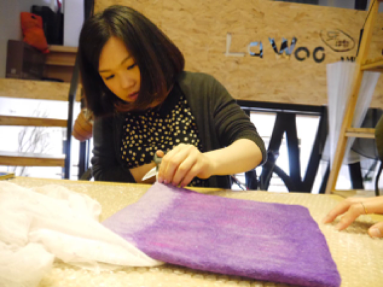
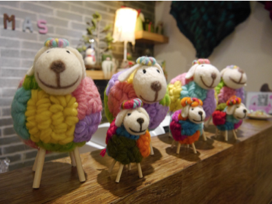

2011年，在上海田子坊文化创意园区的一个小手工作坊里，传递快乐的事业，简简单单地，开始启程。
四年的手作生涯，我们也没找到响亮的品牌口号，没有发掘后现代的高端设计，一定要问我们追求什么，
那就是Isabel姑娘的那句话 “因为我很快乐，我希望用我的作品将快乐传递出去，给更多人带来快乐和幸福的体验，仅此而已。”
在不长不短的四个年头里，我们确实只做了一件事，那就是不停的设计和创作各种各样的羊毛毡手工制品，
不断挑战更为高级的工艺和直指人心的设计。现在乐物已经拥有上百种作品类目，将羊毛毡的可塑性发挥的淋漓尽致，
虽然乐物的家庭成员越来越多，可是他们都没有丢掉乐物最简单最本质的初心，也永远不会忘记——传递快乐。
即使已经四年了，每当客人到店里看着作品傻乐的时候，我们也会跟着客人一起开心，现在的人越来越不会笑了，每次看到
客人们被我们的作品感染情绪，我们也跟他们一样开心。
一对北京的客人在谈恋爱的时候就来过田子坊的总店，领了一对我们自己设计的木脚羊，后来他们终于修成正果，
结婚生子，又回到上海特意来乐物带回了一只小羊和之前的羊组成了完整的一家三口，我们见证了他们的爱情长跑，
所以也特意为他们定制了一对兔子戒托，当然他们和乐物也顺理成章的成为了好朋友，后来他们每次来上海都要来
乐物看一看。
不知不觉，乐物凝聚了太多简单的人，可爱的事。
YOYO是个9岁的小姑娘，跟着妈妈来乐物学习羊毛毡课程，YOYO有着这个年龄段的孩子少有的沉心静气，用了整整
一个下午，全靠自己做了一个可爱的羊毛毡口金包，比妈妈的作品还要成功，后来YOYO也成了我们的“御用”小模特。
心灵手巧的Yeats姑娘和我们一起做羊毛毡鞋子，一边分享自己的爱情故事和旅行心得，一位台湾客人只要到上海出差，
一定要来乐物看看肉肉和我们的新作品。
香港人Maggie小姐是资深广告人，平时很忙，几乎没接触过羊毛毡，同事们知道她喜欢猫头鹰，几年前在她生日的时候， 同事们来乐物将所有的羊毛毡猫头鹰作品扫荡一空，做成礼篮送给她，被一篮子猫头鹰萌化的体验想来一定是幸福的，后来 她有空就来乐物看看，还报名了我们的羊毛毡课程，快乐的姑娘都是心灵手巧的，看看她的作品，绝对是乐物的优秀学员~
乐物还乐于参加慈善及公益团体，在活动中向更多需要帮助和关爱的小伙伴们，传递羊毛毡的温情快乐。
作为国内最早的手工羊毛毡实体店之一，乐物专注羊毛毡设计和制作已经历经四年，我们现在除了在各门店为大家定期 开展制作课程之外，微信ID："lawoo2012"也会不定期发布一些制作和设计的心得以及快乐幸福的点滴小分享，非常期待 和你们一起制造并传递简单的手作体验！